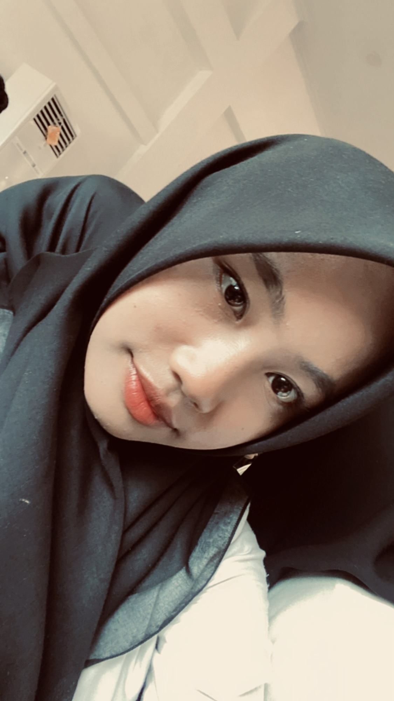

Deskripsi Diri

Tentang Saya
Nama: Dinda Nisa Nurul Aini
Nama Panggilan: DINDA
Tanggal Lahir: 07 Juni 2006
Umur: 18 Tahun
Hobby: Menyanyi
Alamat: Jalan Reso Adi Pawiro, RT.1/RW.7, Tanjung Sari, Kec.Anak Ratu Aji,
Kab. Lampung Tengah, LAMPUNG
KELUARGA
Saya memiliki keluarga kecil yang berjumlah 5 orang yaitu abi,umi, dan 2 adik. abi saya bernama Wawan bekerja sebagai WIRASWASTA dan umi saya bernama Siti sebagai Ibu Rumah Tangga. Adik pertama yaitu laki-laki yang bernama Danu Arta dan adik kedua perempuan bernama Diva Zahra.
TEMAN
Saya memiliki banyak sekali teman, Dan saya juga mempunyai teman dekat yang ada di kampus yaitu Rani, Bibah, Reza, Novita, Ratu, dan Santi, kami setiap istirahat selalu makan bekal yang di berikan ibu atau makan diluar kampus, kami selalu bersama dari semester 1 hingga sekarang semoga bisa lulus dengan bersama-sama.
jika ingin mengenal saya lebih lanjut klik link DISINI